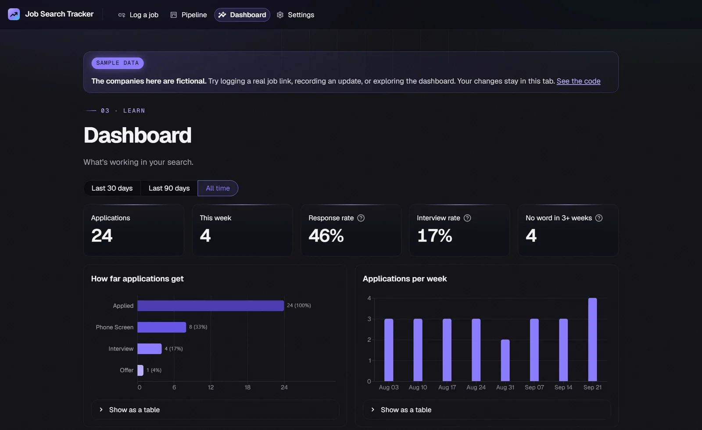
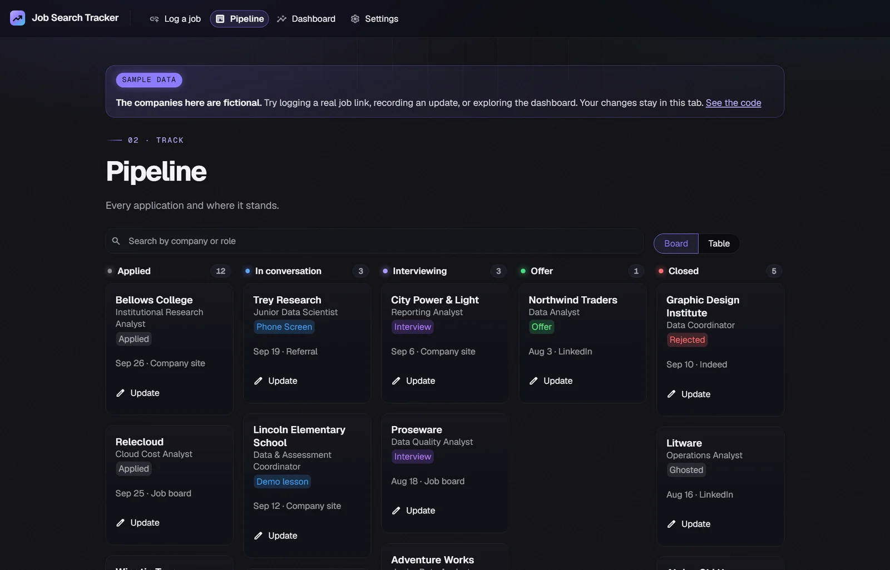

01Web app · Python · MySQL
Job Search Tracker
Paste a job link and the company, role, pay and description fill themselves in. Track every reply on a board, and the dashboard shows which resumes and channels actually get responses. Built for anyone's search, in any field.
- Reads Greenhouse, LinkedIn, Workday, Lever, Ashby, iCIMS and Oracle job pages; Claude fills in anything missing
- MySQL keeps a status history for every application, so the funnel and response rates come straight from the data
- Streamlit app with a pipeline board, dashboard and CSV import, backed by 46 automated tests
The demo runs on made-up sample data; the companies in it are fictional.